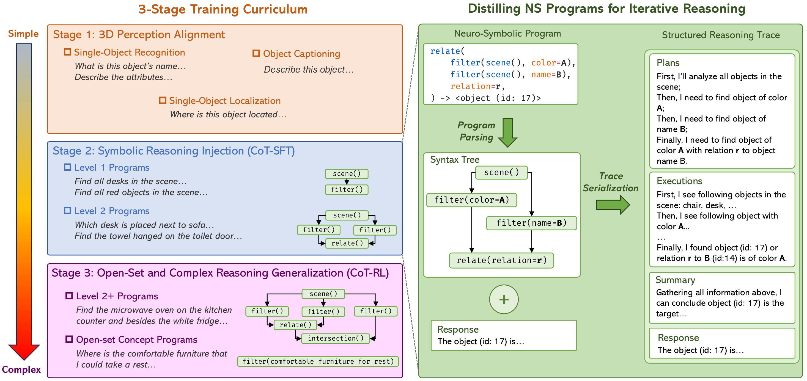
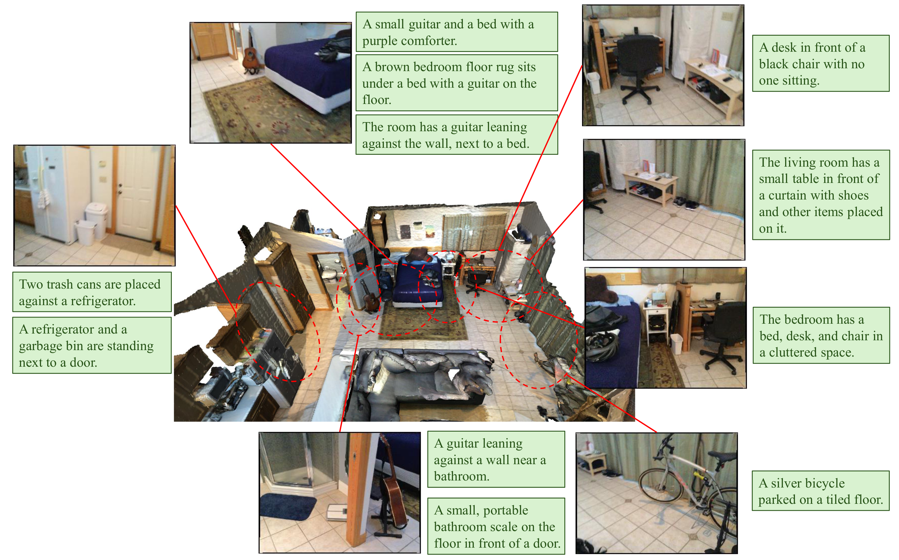

Reasoning Pattern Distillation
Symbolic programs provide verified plans and executions that teach decomposition, filtering, relation checks, and grounded summaries.
ICML 2026 Submission · 3D Spatial Reasoning
APEIRIA transfers transparent symbolic reasoning patterns into 3D MLLMs, enabling open-vocabulary spatial grounding with explicit, verifiable chain-of-thought traces.
Current 3D spatial reasoning methods face a trade-off: neuro-symbolic 3D learners provide interpretable compositional programs but remain tied to closed-set vocabularies, while end-to-end 3D MLLMs can handle free-form language yet often reason as opaque pattern matchers.
APEIRIA bridges these paradigms by distilling verified symbolic execution traces into natural language chain-of-thought. A three-stage curriculum first aligns object-centric 3D perception with language, then injects systematic program-style reasoning via CoT-SFT, and finally extends the learned patterns to open-set concepts and complex nested instructions through CoT-RL.
Symbolic programs provide verified plans and executions that teach decomposition, filtering, relation checks, and grounded summaries.
Compact instance-level features preserve visual, geometric, and spatial structure with far fewer tokens than video-style 3D MLLMs.
Planning and perception remain inspectable interfaces, so stronger external planners or 3D perception modules can be plugged in at inference time.
APEIRIA learns to see, think, and adapt through a simple-to-complex progression that preserves the clarity of symbolic programs.

Align 3D visual-geometric object features with textual concepts for categories, attributes, and locations.
Serialize neuro-symbolic programs into CoT traces that expose plans, object IDs, locations, and step outputs.
Use GRPO with format and soft grounding rewards to adapt reasoning to real-world language and deeper nesting.
APEIRIA improves over prior neuro-symbolic methods and competitive 3D MLLMs on ScanRefer and Multi3DRefer, with modular enhancement pushing performance further.
| Method | Output | ScanRefer Acc@0.25 |
ScanRefer Acc@0.5 |
Multi3DRefer F1@0.25 |
Multi3DRefer F1@0.5 |
|---|---|---|---|---|---|
| Video-3D LLM | Head | 58.1 | 51.7 | 58.0 | 52.7 |
| Inst3D-LMM | Text | 57.8 | 51.6 | 58.3 | 53.5 |
| APEIRIA | Text | 58.4 | 51.2 | 59.2 | 53.8 |
| APEIRIA + modular enhancement | Text | 60.5 | 53.2 | 60.9 | 55.2 |
CoT-RL encourages APEIRIA to preserve a planning-then-execution structure while extending beyond fixed program templates. The model can filter open-vocabulary descriptors, compose multi-condition relations, and summarize grounded object IDs.
Plan Find beige chairs, coat racks, tables, and lamps.
Execute Filter candidate objects and inspect their coordinates.
Verify Select the chair next to the coat rack and left of the table and lamp.
Answer Return the matching object ID and 3D box.

Because APEIRIA keeps planning and execution decoupled, the system can use stronger external scene perception without retraining the whole MLLM.
Replace author and venue fields after the camera-ready version is available.
@inproceedings{apeiria2026,
title={Distilling Neuro-Symbolic Programs into 3D Multi-modal LLMs},
author={Anonymous Authors},
booktitle={International Conference on Machine Learning},
year={2026}
}